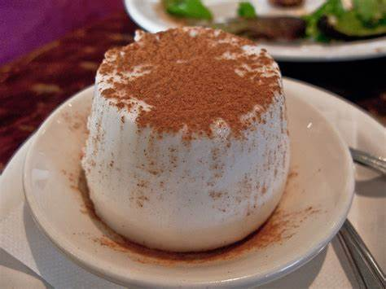

Tembleque

Description
Tembleque is a delicious coconut pudding from Puerto Rico. It is a traditional dessert for the holidays and is a simple and easy recipe to make.
Ingredients
- 1 cup coconut milk
- 1 cup whole milk
- 1/2 cup sugar
- 1/2 cup cornstarch
- 1/4 tsp salt
- 1/2 tsp vanilla extract
- Ground cinnamon, for topping
Instructions
- In a medium saucepan, combine the coconut milk, whole milk, sugar, cornstarch, and salt.
- Place the saucepan over medium heat and cook, stirring constantly, until the mixture thickens and comes to a boil.
- Remove the saucepan from the heat and stir in the vanilla extract.
- Pour the mixture into a mold or individual serving dishes.
- Refrigerate for at least 4 hours or until set.
- To serve, sprinkle the top with ground cinnamon.
- Enjoy!